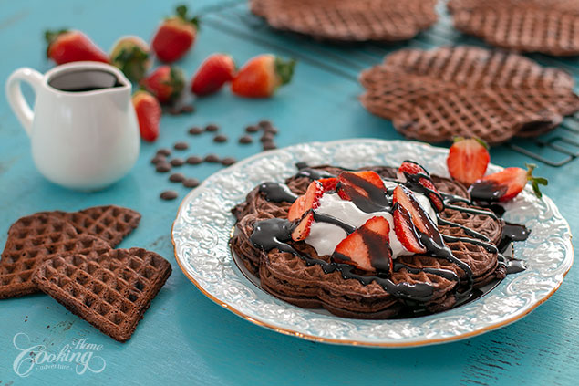

Double Chocolate Waffles

Decadent chocolate waffles, crispy on the outside, tender inside loaded with chocolate, lots of chocolate ...Double Chocolate Waffles, who could ever resist? This waffle recipe include both cocoa powder and chocolate chips for a rich and intense chocolate flavor. Served with some more chocolate sauce on top could easy be considered Triple Chocolate Waffles. So good, so rich, so chocolaty, such a good texture balance….simply divine. Waffles in general can be made for breakfast but these ones can make an amazing dessert as well. They are very easy to prepare and can be served right away which makes them a good choice for whenever you have unexpected guests or to simply satisfy your chocolate craving immediately :) Hope you will try the recipe and enjoy as much as we did!
Prep time=15 mins || Cook time=20 mins || Total time=35 mins
Ingredients
Makes about 10 waffles
Chocolate Waffles
1 3/4 cup (220g) all-purpose flour
1/2 cup (60g) unsweetened cocoa powder
1/3 cup (70g) brown sugar
2 tsp (8g) baking powder
1/2 tsp (3g) baking soda
1/2 tsp (3g) salt
1/2 tsp (1g) cinnamon
2 large eggs, separated, at room temperature
2 tbsp (30g) sugar
2 cups (480g) buttermilk, room temperature
1/3 cup (70g) oil (I used canola oil)
1 tsp (5g) vanilla extract
2/3 cup (120g) bittersweet chocolate chips
Chocolate Sauce
1/2 cup (60g) unsweetened cocoa powder
1/3 cup (70g) sugar
1/4 tsp (1g) salt
1/2 cup (120ml) water
1 tsp (5g) vanilla extract
Directions
Prepare chocolate sauce. In a medium saucepan whisk cocoa powder with sugar and salt. Add water and mix to combine. Place over medium low heat and bring to boil. Simmer for 1 minute, stirring continuously. Remove from heat, add vanilla and set aside to cool until ready to use. Prepare chocolate waffles. In a large bowl whisk together the dry ingredients: flour, cocoa powder, baking powder, baking soda, cinnamon and salt. Separate the eggs. Mix the egg yolks with sugar until smooth and creamy. Add oil, one cup of buttermilk and vanilla and whisk to combine. Add flour mixture and mix until well combined. Add the other cup of buttermilk and whisk to combine. Whip the egg whites until foamy. Gradually add the two tablespoons of sugar and whip until stiff peaks form.Gently fold them into the batter. Incorporate chocolate chips. Preheat your waffle iron and spray both surfaces with cooking spray or grease with oil. Pour about ? to 1/2 cup batter onto one side of the iron and close it. Cook according to your waffle maker instructions. To keep them crisp until you prepare the others, place the cooked ones in the preheated oven at 200F (100C) on a cooling rack . It's best to serve them immediately, while still hot, with whipped cream or ice cream if desires and with some fresh berries and chocolate sauce for a more decadent treat. Enjoy!
Nutrition facts
1 Serving out of 10 - Calories:287, Fat:12.7g, Saturated Fat:4.1g, Carbohydrates:40.4g, Sugar:18.3g , Fiber:3.3g, Protein:6.2g, Cholesterol:35mg, Sodium 266mg 12%, Vitamin D 3mcg 15%, Calcium 113mg 9%, Iron 2mg 12%, Potassium 291mg 6%, daily percent values are based on a 2000 calorie diet